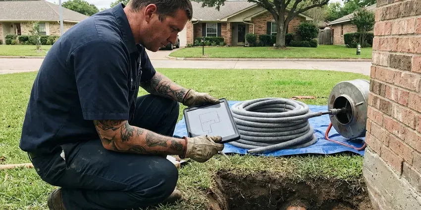

Septic Tank Repair in Torrington, WY
Sewage smell in the yard or a toilet that will not flush? JKV Plumbing repairs septic tanks in Torrington, WY and explains what broke before any work starts.
- Camera Line Inspections
- Effluent Pump Service
- Permit Help Included
- Workmanship Warranty

Septic Tank Acting Up in Torrington, WY?
You get a written quote for the tank, lines or field before any repair starts.
Fixing Septic Systems for Torrington, WY Homeowners
Basements and crawlspaces are both common in Wyoming homes, and both benefit from protection from freezing and groundwater. JKV Plumbing plans septic repairs around that ground, not around a generic spec sheet. We inspect the whole run, from the main drain under the house out to the last lateral in the field. Then you hear what broke, in plain language. Camera photos come with it.
Some of what we do:
- Concrete lid replacement and riser installs
- Effluent pump and float testing
- Camera inspection of the line from the house to the tank

Additional Plumbing Repair Services in Torrington, WY
We offer expert plumbing repair services across Torrington, WY to stop leaks, clear blockages, and keep every fixture working the way it should.


Customers
Why Choose JKV Plumbing for Septic Tank Repair in Torrington, WY?
Not every backup means the field is gone. We start with the liquid level and the outlet filter, because a clogged filter cartridge looks a lot like a failed field from inside the house. A filter cleaning takes minutes.
- System Experience, Our crew has worked on gravity systems and aerobic units all over the Torrington area.
- Local Ground Know-How, We have dug in the soils around Torrington for years and know what lasts in that ground.
- Less Digging, Tee and filter repairs often happen through the access lid with no excavation at all.
Citywide Coverage
Older subdivisions near Torrington that were built before sewer lines arrived still run on tanks, many of them the original ones. Builders back then tended to put tanks in predictable spots, which cuts the time spent probing the yard. Some are under driveways. We have found those too.
Experienced Team
Each tech at JKV Plumbing carries a sewer camera. It means we can diagnose the problem on the first trip out, instead of coming back later with more tools. Pumps and floats get tested on site before anything is replaced.
Safety-First Approach
Our repairs follow the on-site wastewater rules in Wyoming and every permit condition the local health department puts on the job. We keep sewage out of storm drains and ditches during the work. Anything we pump out is hauled to a licensed treatment plant, with a manifest. Records stay on file.
Trusted Certified Torrington Plumbing Services Professionals
At JKV Plumbing, we take pride in licensed, certified plumbing services throughout Torrington, WY. Credentials matter in this trade. Every repair, install and maintenance visit follows strict safety and quality rules, and the plumbers doing the work carry recognized industry credentials.
Call Us Now PHCC Plumbing Contractor Recognition
PHCC Plumbing Contractor Recognition Better Business Bureau (BBB) Accreditation
Better Business Bureau (BBB) Accreditation Angi Certified Pro
Angi Certified Pro ISO 9001 Quality Management Certification
ISO 9001 Quality Management CertificationFrom Tank to Drain Field: Septic Repair in Torrington, WY
Repair Versus Replace in Torrington, WY
Most septic systems that fail can be repaired for a fraction of the cost of a new one. We price the repair and the replacement side by side, and we tell you which one we would pick for our own house. A new field is sometimes the right call. Often it is not.

Drain Field Repair in Torrington, WY
Green stripes over the trenches and a wet lawn in dry weather are the classic signs of a field in trouble. Most of the time it is biomat, a slimy layer that seals the trench bottom. Compaction and hydraulic overload from a running toilet can do it too. We test before recommending anything big. Resting or jetting can bring a field back.
Septic Tank Leak Repair in Torrington
A tank that never fills to the outlet, or one that fills slowly with groundwater after rain, has a leak. We pump it down and look at the walls and seams with a light, and dye flushed down a fixture shows us where the water moves. Hairline cracks get a hydraulic cement patch. Split tanks get replaced.
House-to-Tank Line Repair in Torrington
Gurgling drains right after a pump-out point to the line between the house and the tank, not the tank itself. That section sags or breaks from roots and settling soil. We camera it from the cleanout and mark the bad spot on the surface. Then we dig one hole, not a trench. A second cleanout near the tank goes in while it is open.
Septic Lid and Riser Repair in Torrington
Old concrete lids crack, and a cracked lid over a 1,000-gallon tank is a real danger to kids and pets. We replace failing lids and add risers that bring access up to the lawn. Future pumping gets cheaper. Every lid we set is screwed down or locked so a child cannot lift it.
After-Hours Septic Backup Calls in Torrington
Late-night backups usually start in the lowest drain in the house, often a basement floor drain or a first-floor shower. The after-hours truck has a jetter and spare floats on board, so most nights end with water flowing again. Bad nights end with a pump truck. Either way, you know what failed before we leave.
Emergency Septic Repair in Torrington
Sewage in the shower pan on a Sunday is an emergency, and we treat it like one. The first thing we ask is whether the tank has a riser we can reach, because uncovering a buried lid can add an hour or more. Stop using water until the tech arrives. Then we find the blockage, clear it and tell you what caused it.

Camera Inspection of Septic Baffles in Torrington, WY
Some tanks have no riser, so we run a push camera through the small inspection port to see the baffles. That saves digging up the whole lid. If the outlet tee is cracked or missing, we dig at that end only, then install a PVC tee with a filter housing. Concrete lids get a riser while they are open.
Nearby Septic Tank Repair for Torrington, WY
Looking for septic repair near you usually means something is already wrong. Describe the symptoms when you call, since an alarm and a gurgle send us after different problems. The right parts come with the tech.
Local work means we have seen your type of system before, probably on your street. Builders in each subdivision tend to use the same tank and field layout, and that pattern helps us find a buried lid fast. JKV Plumbing keeps service notes by address. That makes a second visit faster.
JKV Plumbing at a Glance
- Fully licensed plumbing team covering Torrington, WY
- Same-day appointments and 24/7 emergency response
- Upfront, flat-rate pricing before work begins
- 4.9-star rated by 782+ Wyoming customers
Torrington Map
Torrington Information
- Population
- 6,212
- Area codes
- Local
- Service area
- Torrington and communities within 40 miles
- Nearby
- Ranchettes, Cheyenne, Douglas, Laramie
Basements and crawlspaces are both common in Wyoming homes, and both need protection from freezing and groundwater. A field that drains too slowly or too fast fails early, which is why our techs probe the field before any quote in Torrington, WY.
Expert Services
Reach out to JKV Plumbing for reliable plumbing work done by licensed pros in Torrington, WY.
Our Specialized Plumbing Services in Torrington, WY
At JKV Plumbing, you get every kind of plumbing service from one company across Torrington, WY. From leak detection to full system installs, our team works fast and charges fair prices on homes and commercial properties alike. Explore our core services below:


Our Septic Tank Repair Process in Torrington, WY
From the call to the closed lid, here is how we handle septic trouble.
Tell Us the Symptoms
Slow drains or a sewage smell? Mention it on the call so the tech brings the right parts.
Open and Check
We uncover the tank, check the baffles and pump and run a camera where it helps. You get written options.
Repair and Paperwork
After the repair we test flow, close everything up and hand you the paperwork.
Frequently Asked Questions About Septic Tank Repair in Torrington
A baffle replacement runs $300 to $900. Effluent pump replacement usually costs $900 to $2,000, and leach field work can range from $5,000 to $20,000 or more if the trenches must be rebuilt. The quote is firm.
Major work usually does, such as replacing the tank or the drain field, and the local health department issues it. Our office files the application and books the inspector. A tee swap or a new float usually goes without a permit.
Soil decides how fast the field can take water, which decides how long it lasts. Basements and crawlspaces are both common in Wyoming homes, and both need protection from freezing and groundwater. Heavy clay drains slowly and floods trenches after big rains, while sand and gravel can pass effluent too fast to treat it. We dig a test hole before quoting field work.
Our workmanship on every repair, plus the manufacturer's warranty on new pumps and alarms. You will find the full terms written on the invoice. Should a part we installed quit early, we handle the claim with the supplier so you do not have to chase it.
Every three to five years covers most homes with a 1,000-gallon tank and three or four people living in the house. A garbage disposal or a bigger family shortens that. We measure the sludge and scum on each visit and set the next date from the numbers.
Sometimes, and it is worth checking before you pay for a new one. Jetting the laterals and leveling the distribution box bring back a lot of fields that look dead from the surface. Giving the field a rest for a few months sometimes lets the biomat break down. Sealed soil cannot be fixed.
Stop running water right away, including the washer and dishwasher, so the level in the tank does not keep rising. Keep people and pets away from the wet area. Then call (307) 393-4049 for an emergency visit. We clear the blockage and walk you through cleanup.
Not inside the tank, and not the wiring. Septic gas can make you pass out before you smell much of anything, and the pump circuit carries household voltage right next to water. Cleaning a filter at grade is fine with gloves on.
What Our Customers Say About Our Plumbing Experts

Megan L.
Our upstairs tub drained so slowly that every shower turned into a bath. JKV Plumbing pulled a wad of hair out of the stopper and then snaked the line past the trap. Three months later it still drains fast.
Drain Cleaning · Ranchettes, WY
Tyler J.
We bought a taller comfort height toilet for my dad, who just had knee surgery. The plumber pulled the old one, found the flange was cracked, and replaced it before setting the new bowl. Took about two hours.
Toilet Installation · Torrington, WY
Kevin O.
Before buying our house I paid for a sewer camera inspection. JKV Plumbing found a belly in the line that held standing water about forty feet from the cleanout. We used the video to get the sellers to fix it before closing.
Sewer Camera Inspection · Laramie, WYCarlos V.
Our house still had galvanized pipe, and upstairs the shower was a trickle. The crew repiped everything in PEX over three days and patched every drywall hole before they left. The pressure difference is night and day.
Repiping · Torrington, WY
Brian W.
I smelled gas behind the dryer and called right away. The plumber found a corroded flex connector, replaced it, and pressure tested the whole line before turning the gas back on. He let me watch the gauge hold steady for fifteen minutes.
Gas Line Repair · Rawlins, WY
Patricia H.
We had a slab leak that two other companies could not find. JKV Plumbing located it in under an hour with a listening device. They rerouted the line through the attic instead of breaking up the floor, so we kept our kitchen tile.
Slab Leak Repair · Rawlins, WY